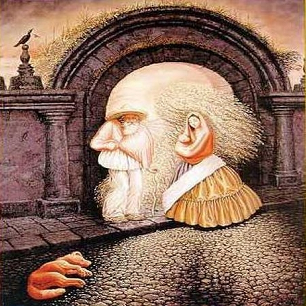

ILUSIONES CON PERSONAS, ANIMALES Y PAISAJES

La imagen a la izquierda tiene unas dimensiones ade 90 x 90 pixels y si pulsas sobre este enlace mapa o la propia imagen se abrirá una página web con la imagen en forma de mapa a mayores dimensiones y podrás comprobar los personajes que en ella aparecen pulsando sobre las áreas de dicha imagen.

La imagen a la izquierda tiene unas dimensiones ade 90 x 90 pixels y si pulsas sobre este enlace mapa o la propia imagen se abrirá una página web con la imagen en forma de mapa a mayores dimensiones y podrás comprobar los personajes que en ella aparecen pulsando sobre las áreas de dicha imagen.

La imagen a la izquierda tiene unas dimensiones ade 90 x 135 pixels y si pulsas sobre este enlace mapa o la propia imagen se abrirá una página web con la imagen en forma de mapa a mayores dimensiones y podrás comprobar los personajes que en ella aparecen pulsando sobre las áreas de dicha imagen.